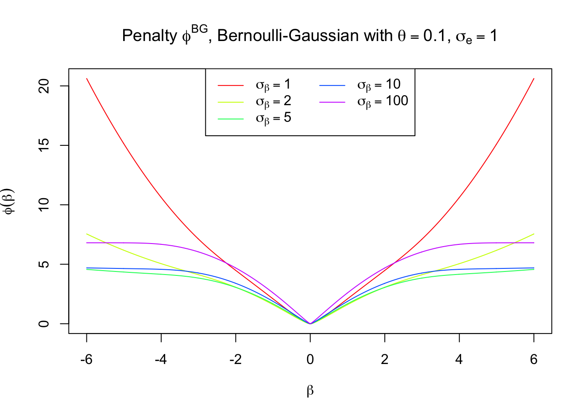
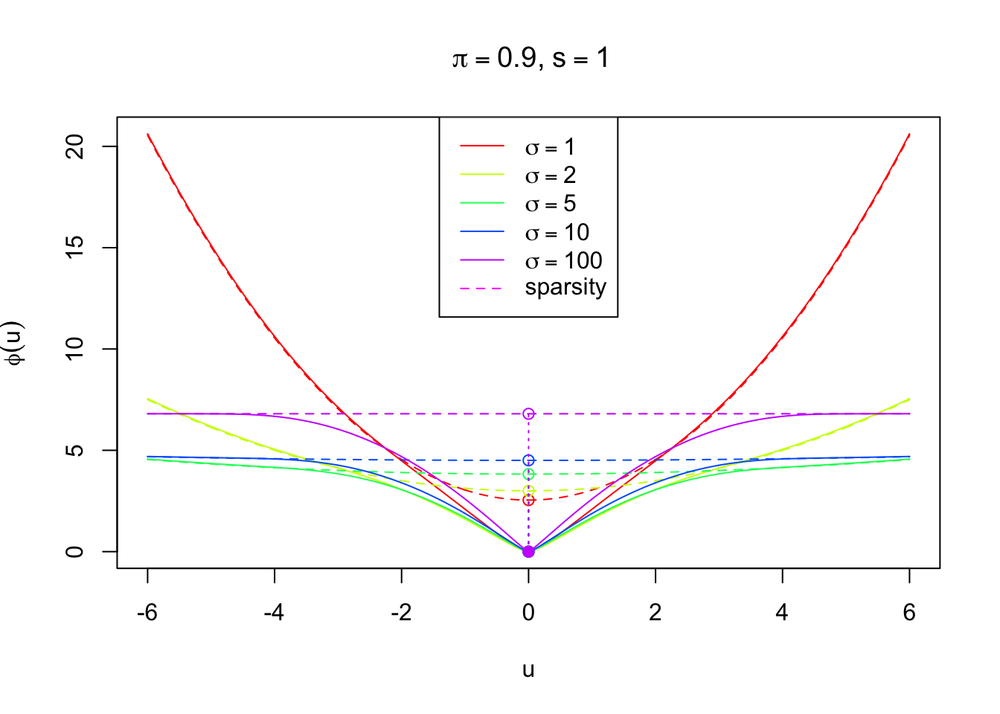

Last updated: 2017-03-12
Code version: 8c206a4
In normal means problem, suppose
\[ \begin{array}{c} z|\mu \sim N(\mu, s^2)\\ \mu \sim g \end{array} \]
Under Bayesian framework, we get an estimator \(\hat\mu_B\) from the posterior distribution \(\mu | z\), optimal to a pre-specified loss function.
In particular, the best estimator in terms of quadratic loss is \(E[\mu | z]\), the posterior mean. By Tweedie’s formula
\[ E[\mu | z] = z + s^2\nabla\log f(z) \] where \(f\) is the marginal probability density of \(z\), after integrating out \(\mu\). \(f\) is usually a convolution of prior and likelihood. In the normal means setting, \(f = N(0, s^2) * g\).
The problem is whether we can find a \(\phi\), such that the optimal Bayesian estimator \(\hat\mu_B\) is a solution to the regularized least squares with \(\phi\) as the penalty.
\[ \hat\mu_B = \arg\min_u\{\frac1{2s^2}(z - u)^2 + \phi(u)\} = \text{prox}_{s^2\phi}(z) \]
If we let \(\hat\mu_B\) be the posterior mean \(E[\mu | z]\), we are essentially matching Tweedie’s formula with a proximal operator, such that
\[ z + s^2\nabla\log f(z) = \text{prox}_{s^2\phi}(z) \] For clarity let \(u := \text{prox}_{s^2\phi}(z)\). Now we are using two key properties of a proximal operator.
\[ u = \text{prox}_{\lambda f}(z) \Rightarrow \begin{array}{l} u \in z - \lambda\partial f(u) \\ u = z - \lambda\nabla M_{\lambda f}(z) \end{array} \]
By the properties of the proximal operator we have
\[ z - u \in s^2\partial\phi(u) \] where \(\partial\phi\) is the (local) subgradient of \(\phi\). Putting together the previous two equations
\[ \begin{array}{c} -s^2\nabla\log f(z) \in s^2\partial\phi(u)\\ u = \text{prox}_{s^2\phi}(z) \end{array} \]
We can write it in another way, and use the property of the proximal operator one more time
\[ z \in (z - s^2\partial\phi(u)) - s^2\nabla\log f(z) \Rightarrow z \in \text{prox}_{s^2\log f}(z - s^2\partial\phi(u))) \] Combine this with
\[ u \in z - s^2\partial\phi(u) \] use the property of the proximal operator, and we get
\[ z = \text{prox}_{s^2\log f}(u) = u - s^2\nabla M_{s^2\log f}(u) \]
Now we have
\[ \begin{array}{l} z = u - s^2\nabla M_{s^2\log f}(u)\\ z \in u + s^2\partial\phi(u) \end{array} \]
Compare this two, we can write
\[ - \nabla M_{s^2\log f}(u) \in \partial\phi(u) \]
One such \(\phi\) can be written as
\[ \phi = -M_{s^2\log f} + c \]
We’ve obtained that
\[ z = \text{prox}_{s^2\log f}(u) \]
Therefore,
\[ \phi(u) = -M_{s^2\log f}(u) + c = -\{\log f(z) + \frac{1}{2s^2}(z - u)^2\} + c \] where \[ \begin{array}{rl} & z = \text{prox}_{s^2\log f}(u) \\ \Rightarrow & u = z + s^2\log f(z) = E[\mu | z] \end{array} \] and \(c\) is a constant to make sure that \(\phi(0) = 0\).
So in the normal means problem, or in other words, we have a normal likelihood with known noise level \(s^2\) and a prior \(g\) for the unknown mean \(\mu\), and we use the posterior mean as the estimate, we can obtain \(\phi\) in the following steps.
Figure out the posterior mean \(E[\mu|z]\) for a given observation \(z\), for example, by Tweedie’s formula.
For each \(u\), find a \(z\) such that \(E[\mu|z] = u\).
\(\phi(u) = -\{\log f(z) + \frac{1}{2s^2}(z - u)^2\}\).
To make sure \(\phi(0) = 0\), \(\phi(u) \leftarrow \phi(u) - \phi(0)\).
Then
\[ E[\mu|z] = \arg\min_u \frac{1}{2s^2}(z - u)^2 + \phi(u) \]
The Bernoulli-Gaussian framework specifies the prior on \(\mu\) as
\[
\begin{array}{rl}
& g(\mu) = \pi\delta_0 + (1 - \pi)N(\mu; 0, \sigma^2)\\
\Rightarrow & f(z) = \pi N(z; 0, s^2) + (1 - \pi)N(z; 0, \sigma^2 + s^2)
\end{array}
\] where \(\delta_0\) is a point mass at 0, and \(N(\mu; 0, \sigma^2)\) is the density of \(N(0, \sigma^2)\) at \(\mu\), calculated in R as dnorm(mu, 0, sigma).
Luckily for Bernoulli-Gaussian, the posterior distribution for \(\mu | z\) can be written out analytically.
\[ \begin{array}{c} \mu | z \sim p\delta_0 + (1 - p)N(\frac{z\sigma^2}{\sigma^2 + s^2}, \frac{\sigma^2s^2}{\sigma^2 + s^2})\\ p = \frac{\pi N(z; 0, s^2)}{\pi N(z; 0, s^2) + (1 - \pi)N(z; 0, \sigma^2 + s^2)} \end{array} \]
Therefore, the posterior mean
\[ E[\mu | z] = (1 - p) \frac{z\sigma^2}{\sigma^2 + s^2} = \frac{z\sigma^2}{\sigma^2 + s^2 } \frac{(1 - \pi)N(z; 0, \sigma^2 + s^2)}{\pi N(z; 0, s^2) + (1 - \pi) N(z; 0, \sigma^2 + s^2)} \]
pm = function(z, s, sigma, pi) {
p1 = pi * dnorm(z, 0, s)
p2 = (1 - pi) * dnorm(z, 0, sqrt(s^2 + sigma^2))
p1 = p1 / (p1 + p2)
p2 = 1 - p1
pm = z * sigma^2 / (sigma^2 + s^2) * p2
return(pm)
}
z = seq(-6, 6, 0.01)
s = 1
pi = 0.9
pm1 = pm(z, s, 1, pi)
pm2 = pm(z, s, 10, pi)
pm3 = pm(z, s, 100, pi)
plot(z, pm2, type = "l", xlab = "Observation z", ylab = "Posterior Mean",
col = "blue", main = bquote(paste("Bernoulli-Gaussian shrinkage with", ~pi == .(pi), ",", ~s == .(s)))
)
lines(z, pm1, col = "black")
abline(0, 1, lty = 2, col = "green")
abline(h = 0, lty = 2, col = "yellow")
lines(z, pm3, col = "red")
legend("topleft", col = c("black", "blue", "red"), lty = 1, c(expression(sigma == 1), expression(sigma == 10), expression(sigma == 100)))Note that the posterior mean is never strictly zero unless \(z = 0\), yet as \(\sigma\to\infty\), it behaves more and more like hard-thresholding.
In spike-and-slab framework, the posterior distribution of \(\mu\) is
\[ \mu | z \sim p\delta_0 + (1 - p)N(\frac{z\sigma^2}{\sigma^2 + s^2}, \frac{\sigma^2s^2}{\sigma^2 + s^2}) \] Thus it’s also a mixture of a point mass at \(0\) and a normal. Using the posterior mean \(E[\mu|z]\) directly as the estimate \(\hat\mu_B\), the estimate is never strictly \(0\) unless \(z = 0\). Instead, in order to impose sparsity, we usually set \(\hat\mu_B = 0\) if \(p \geq 0.5\). Meanwhile, when \(p < 0.5\), we assume \(\mu | z\) is not from a point mass at \(0\) but from the other component of the mixture \(N(\frac{z\sigma^2}{\sigma^2 + s^2}, \frac{\sigma^2s^2}{\sigma^2 + s^2})\), hence set \(\hat\mu_B\) to its mean \(\frac{z\sigma^2}{\sigma^2 + s^2}\).
that is
\[ \begin{array}{rl} & \pi N(z; 0, s^2) \geq (1 - \pi)N(z; 0, \sigma^2 + s^2) \\ \Leftrightarrow & \frac{N(z; 0, \sigma^2 + s^2)}{N(z; 0, s^2)} \leq \frac{\pi}{1 - \pi}\\ \Leftrightarrow & |z| \leq \sqrt{2(\sigma^2 + s^2)(s^2 / \sigma^2)\log((\frac{\pi}{1 - \pi})\sqrt{(\sigma^2 + s^2)/ s^2})} := z_{s, \pi, \sigma}^* \end{array} \] Here we can use a simple rule
\[ \hat\mu_B = \begin{cases} 0 & |z| \leq z_{s, \pi, \sigma}^* \\ \frac{z\sigma^2}{\sigma^2 + s^2} & \text{otherwise} \end{cases} \]
as \(\sigma \to \infty\), it is very close to hard-thresholding.
s = 1
pi = 0.9
sigma = 100
zstar = sqrt(2 * (sigma^2 + s^2) * (s^2 / sigma^2) * log(pi / (1 - pi) * sqrt((sigma^2 + s^2) / s^2)))
pdf1 = dnorm(z, 0, s)
pdf2 = dnorm(z, 0, sqrt(sigma^2 + s^2))
plot(z, pdf1, type = "l", xlab = "observation", ylab = "Probability Density Function",
main = bquote(paste(s == .(s),", ", pi == .(pi),", ", sigma == .(sigma)))
)
lines(z, pdf2, col = "red")
segments(zstar, -1, zstar, 2 * dnorm(zstar, 0, sqrt(sigma^2 + s^2)), lty = 1, col = "blue")
legend("topright", col = c("black", "red"), c(expression(N(0, s^2)), expression(N(0, sigma^2 + s^2))), lty = 1)
text(zstar, 2 * dnorm(zstar, 0, sqrt(sigma^2 + s^2)), label = expression(z^"*"), pos = 3)x = seq(zstar, 6, 0.01)
y = x * sigma^2 / (sigma^2 + s^2)
plot(x, y, type = "n", xlim = c(-max(x), max(x)), ylim = c(-max(y), max(y)), xlab = "observation", ylab = expression(hat(mu)),
main = bquote(paste(s == .(s),", ", pi == .(pi),", ", sigma == .(sigma))))
abline(h = 0, lty = 2, col = "yellow")
abline(0, 1, lty = 2, col = "green")
lines(x, y)
x = -seq(zstar, 6, 0.01)
y = x * sigma^2 / (sigma^2 + s^2)
lines(x, y)
segments(-zstar, 0, zstar, 0)
segments(-zstar, 0, -zstar, -zstar * sigma^2 / (sigma^2 + s^2), lty = 3)
segments(zstar, 0, zstar, zstar * sigma^2 / (sigma^2 + s^2), lty = 3)plot(z, pm2, type = "n", xlab = "Observation z", ylab = "Posterior Mean",
col = "blue", main = bquote(paste("Bernoulli-Gaussian shrinkage with", ~pi == .(pi), ",", ~s == .(s)))
)
abline(0, 1, lty = 2, col = "green")
abline(h = 0, lty = 2, col = "yellow")
lines(z, pm2, col = "blue")
lines(z, pm1, col = "black")
lines(z, pm3, col = "red")
x = seq(zstar, 6, 0.01)
y = x * sigma^2 / (sigma^2 + s^2)
col = "purple"
lines(x, y, col = col)
x = -seq(zstar, 6, 0.01)
y = x * sigma^2 / (sigma^2 + s^2)
lines(x, y, col = col)
segments(-zstar, 0, zstar, 0, col = col)
segments(-zstar, 0, -zstar, -zstar * sigma^2 / (sigma^2 + s^2), lty = 3, col = col)
segments(zstar, 0, zstar, zstar * sigma^2 / (sigma^2 + s^2), lty = 3, col = col)
legend("topleft", col = c("black", "blue", "red", col), lty = 1, c(expression(sigma == 1), expression(sigma == 10), expression(sigma == 100), expression(paste(sigma == 100, ", sparsity"))))Under the model
\[ \begin{array}{c} z|\mu \sim N(\mu, s^2)\\ \mu \sim g = \pi\delta_0 + (1 - \pi)N(0, \sigma^2) \end{array} \]
The key question is to find \(\phi\) such that \(\hat\mu_B = \text{prox}_{s^2\phi}(z)\).
\[ \hat\mu_B = E[\mu|z] = \frac{z\sigma^2}{\sigma^2 + s^2 } \frac{(1 - \pi)N(z; 0, \sigma^2 + s^2)}{\pi N(z; 0, s^2) + (1 - \pi) N(z; 0, \sigma^2 + s^2)} \]
Thus \(\phi\) can be generated in following steps.
For each \(u\), find a \(z\) such that \(E[\mu|z] = u\), using aforementioned formula for \(E[\mu|z]\).
Compute \(f(z) = \pi N(z; 0, s^2) + (1 - \pi)N(z; 0, \sigma^2 + s^2)\), and specifically, \(f(0) = \pi N(0; 0, s^2) + (1 - \pi)N(0; 0, \sigma^2 + s^2)\).
\(\phi(u) = -\{\log f(z) + \frac{1}{2s^2}(z - u)^2\} + \log f(0)\)
phi = function (u, s, sigma, pi) {
zhat = c()
for (i in 1:length(u)) {
pmu = function(z) {
pmu = pm(z, s, sigma, pi) - u[i]
return(pmu)
}
zhat[i] = uniroot(pmu, c(-20, 20))$root
}
fz = pi * dnorm(zhat, 0, s) + (1 - pi) * dnorm(zhat, 0, sqrt(s^2 + sigma^2))
fz0 = pi * dnorm(0, 0, s) + (1 - pi) * dnorm(0, 0, sqrt(s^2 + sigma^2))
phi_sigma = -log(fz) - (zhat - u)^2 / (2 * s^2) + log(fz0)
return(phi_sigma)
}
s = 1
pi = 0.9
u = seq(-6, 6, 0.01)
ymax = max(phi(u, s, sigma = 1, pi))
plot(u, phi(u, s, sigma = 1, pi), type = "n", ylim = c(0, ymax),
xlab = expression(u), ylab = expression(phi(u)),
main = bquote(paste(~pi == .(pi), ",", ~s == .(s)))
)
nsigma = c(1, 2, 5, 10, 100)
k = 1
for (sigma in nsigma) {
lines(u, phi(u, s, sigma = sigma, pi), col = rainbow(length(nsigma))[k])
k = k + 1
}
legend("top", col = rainbow(length(nsigma))[1:(k - 1)], lty = 1,
legend = expression(
sigma == 1,
sigma == 2,
sigma == 5,
sigma == 10,
sigma == 100
)
)
As discussed before, in order to impose sparsity in \(\hat\mu_B\), we adopt the rule
\[ \hat\mu_B = \begin{cases} 0 & |z| \leq z_{s, \pi, \sigma}^* \\ \frac{z\sigma^2}{\sigma^2 + s^2} & \text{otherwise} \end{cases} \]
It’s easy to see that the penalty term corresponding to this rule should be a \(l_2\)-\(l_0\) regularization. In particular,
\[ \phi(u) = \frac{1}{2\sigma^2}u^2 + \lambda\|u\|_0 \] where \(\|u\|_0 = I(u \neq 0)\) is the indicator of \(u\) being nonzero. A little algebra shows that
\[ \lambda = \frac{{z^*}^2\sigma^2}{2s^2(\sigma^2 + s^2)} = \log\left(\frac{\pi}{1-\pi}\sqrt{\frac{\sigma^2 + s^2}{s^2}}\right) \] Written in another way
\[ \begin{array}{rl} & \arg\min_u\{\frac1{2s^2}(z - u)^2 + \phi(u)\}\\ = & \arg\min_u\{\frac1{2s^2}(z - u)^2 + \frac{1}{2\sigma^2}u^2 + \log\left(\frac{\pi}{1-\pi}\sqrt{\frac{\sigma^2 + s^2}{s^2}}\right)\|u\|_0\}\\ = & \begin{cases} 0 & |z| \leq z_{s, \pi, \sigma}^* \\ \frac{z\sigma^2}{\sigma^2 + s^2} & \text{otherwise} \end{cases} \end{array} \]
# zstar = function (s, pi, sigma) {zstar = sqrt(2 * (sigma^2 + s^2) * (s^2 / sigma^2) * log(pi / (1 - pi) * sqrt((sigma^2 + s^2) / s^2))); return(zstar)}
s = 1
pi = 0.9
# phi_s = function (u, s, pi, sigma) {phi_s = 1 / (2 * sigma^2) * u^2 + zstar(s, pi, sigma = 1) * (s^2 + sigma^2) / (2 * sigma^2 * s^2); return(phi_s)}
phi_s = function (u, s, pi, sigma) {phi_s = 1 / (2 * sigma^2) * u^2 + log(pi / (1 - pi) * sqrt((sigma^2 + s^2) / s^2)); return(phi_s)}
ymax = max(phi_s(u, s, pi, sigma = 1))
plot(u, phi_s(u, s, pi, sigma = 1), type = "n", ylim = c(0, ymax),
xlab = expression(u), ylab = expression(phi(u)),
main = bquote(paste(~pi == .(pi), ",", ~s == .(s)))
)
nsigma = c(1, 2, 5, 10, 100)
k = 1
for (sigma in nsigma) {
lines(u, phi_s(u, s, pi, sigma = sigma), col = rainbow(length(nsigma))[k])
points(0, phi_s(0, s, pi, sigma = sigma), col = rainbow(length(nsigma))[k])
points(0, 0, col = rainbow(length(nsigma))[k], pch = 19)
segments(0, 0, 0, phi_s(0, s, pi, sigma = sigma), lty = 3, col = rainbow(length(nsigma))[k])
k = k + 1
}
legend("top", col = rainbow(length(nsigma))[1:(k - 1)], lty = 1,
legend = expression(
sigma == 1,
sigma == 2,
sigma == 5,
sigma == 10,
sigma == 100
)
)u = seq(-6, 6, 0.01)
ymax = max(c(phi(u, s, sigma = 1, pi), phi_s(u, s, pi, sigma = 1)))
plot(u, phi(u, s, sigma = 1, pi), type = "n", ylim = c(0, ymax),
xlab = expression(u), ylab = expression(phi(u)),
main = bquote(paste(~pi == .(pi), ",", ~s == .(s)))
)
nsigma = c(1, 2, 5, 10, 100)
k = 1
for (sigma in nsigma) {
lines(u, phi(u, s, sigma = sigma, pi), col = rainbow(length(nsigma))[k])
lines(u, phi_s(u, s, pi, sigma = sigma), col = rainbow(length(nsigma))[k], lty = 2)
points(0, phi_s(0, s, pi, sigma = sigma), col = rainbow(length(nsigma))[k])
points(0, 0, col = rainbow(length(nsigma))[k], pch = 19)
segments(0, 0, 0, phi_s(0, s, pi, sigma = sigma), lty = 3, col = rainbow(length(nsigma))[k])
k = k + 1
}
legend("top",
col = c(rainbow(length(nsigma))[1:(k - 1)], 6),
lty = c(rep(1, length(nsigma)), 2),
legend = c(expression(
sigma == 1,
sigma == 2,
sigma == 5,
sigma == 10,
sigma == 100
), "sparsity")
)
sessionInfo()R version 3.3.2 (2016-10-31)
Platform: x86_64-apple-darwin13.4.0 (64-bit)
Running under: macOS Sierra 10.12.3
locale:
[1] en_US.UTF-8/en_US.UTF-8/en_US.UTF-8/C/en_US.UTF-8/en_US.UTF-8
attached base packages:
[1] stats graphics grDevices utils datasets methods base
loaded via a namespace (and not attached):
[1] backports_1.0.5 magrittr_1.5 rprojroot_1.2 tools_3.3.2
[5] htmltools_0.3.5 yaml_2.1.14 Rcpp_0.12.9 stringi_1.1.2
[9] rmarkdown_1.3 knitr_1.15.1 git2r_0.18.0 stringr_1.2.0
[13] digest_0.6.11 workflowr_0.4.0 evaluate_0.10 This R Markdown site was created with workflowr